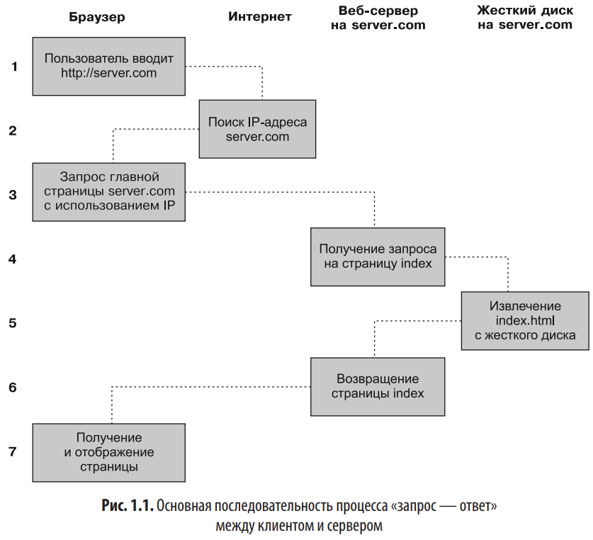
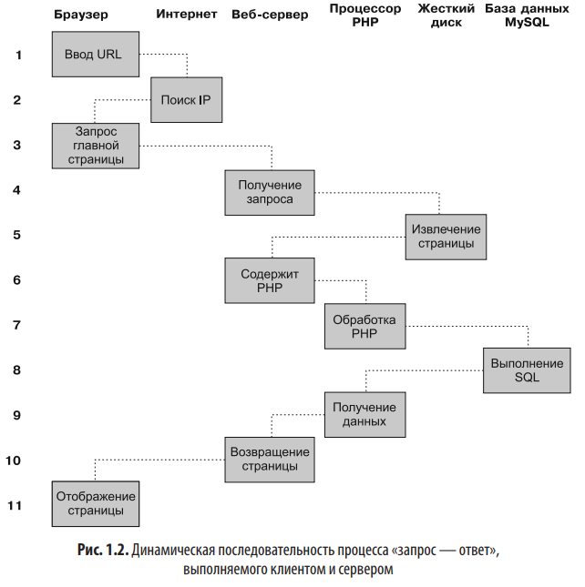

HTTP представляет собой стандарт взаимодействия, регулирующий порядок направления запросов и получения ответов — процесса, происходящего между браузером, запущенным на компьютере конечного пользователя, и веб-сервером.
Задача сервера состоит в том, чтобы принять запрос от клиента и попытаться дать на него содержательный ответ, обычно передавая ему запрошенную веб-страницу. Именно поэтому и используется термин «сервер» («обслуживающий»). Партнером, взаимодействующим с сервером, является клиент, поэтому данное понятие применяется как к браузеру, так и к компьютеру, на котором он работает.
Между клиентом и сервером может располагаться ряд других устройств, например маршрутизаторы, модули доступа, шлюзы и т. д. Они выполняют различные задачи по обеспечению безошибочного перемещения запросов и ответов между клиентом и сервером. Как правило, для отправки этой информации используется интернет. Некоторые из этих промежуточных устройств могут также ускорить интернет путем локального сохранения страниц или информации в так называемом кэше, обслуживая затем данное содержимое для клиентов непосредственно из кэша, без постоянного извлечения его из сервера-источника.
В наиболее общем виде процесс «запрос — ответ» состоит из просьбы браузера или другой платформы к веб-серверу отправить ему веб-страницу и выполнения браузером данной просьбы. После этого браузер занимается отображением или рендерингом страницы.
 При этом соблюдается такая последовательность действий.При передаче типовой веб-страницы этот процесс также осуществляется для каждого имеющегося на ней объекта: элемента графики, встроенного видео- или Flash-ролика и даже шаблона CSS.
Обратите внимание на то, что на шаге 2 браузер ищет IP-адрес, принадлежащий доменному имени server.com. У каждой машины, подключенной к интернету, включая и ваш компьютер, есть свой IP-адрес. Но, как правило, доступ к вебсерверам осуществляется по именам, таким как google.com. Браузер обращается к вспомогательной интернет-службе, так называемой системе доменных имен (Domain Name System — DNS), чтобы найти связанный с сервером IP-адрес, а затем воспользоваться им для связи с компьютером.
Для динамического сайта эта последовательность действий может принимать следующий вид:
Также не стоит забывать о JavaScript-коде, который интерпретируется локально на машине клиента.
Использование PHP существенно упрощает встраивание средств, придающих веб-страницам динамические свойства. Когда страницам присваивается расширение PHP, у них появляется прямой доступ к языку сценариев. Разработчику нужно лишь написать код, похожий на этот:
<?php
echo "Сегодня" . date('T') . ". ";
?>
// или эквивалентно
Сегодня <?php echo date("l"); ?>. Последние новости.
Последние новости.Открывающий тег <?php дает веб-серверу разрешение на интерпретацию всего последующего кода вплоть до тега ?>. Все, что находится за пределами этой конструкции, отправляется клиенту в виде простого HTML. Поэтому текст Последние новости просто выводится в браузер. А внутри PHP-тегов встроенная функция date() отображает текущий день недели, соответствующий системному времени сервера.
Упомянув PHP, не забудем также и о других героях программирования динамических веб-страниц, а именно MySQL, JavaScript, CSS, HTML5 и, конечно, Apache
Мы уже немного касались того, что делает веб-сервер в процессе обмена информацией между клиентом и сервером по протоколу HTTP, но на самом деле негласно он выполняет куда более масштабную работу
В дополнение к модулям PHP наиболее важными для вас как для веб-программиста будут модули, занимающиеся обеспечением безопасности. В качестве других примеров может послужить модуль Rewrite, позволяющий веб-серверу обрабатывать широкий диапазон типов URL-адресов и перезаписывать их в соответствии с его внутренними требованиями, и модуль Proxy, который можно использовать для обслуживания часто запрашиваемых страниц из кэша, чтобы снизить нагрузку на сервер.
Истинная красота рождается однако в сочетании этих технологий: PHP занят основной работой на веб-сервере, MySQL управляет данными, а CSS и JavaScript вместе заботятся о представлении веб-страницы. JavaScript может также взаимодействовать с вашим PHP-кодом на веб-сервере, когда ему нужно что-нибудь обновить (как на сервере, так и на веб-странице). И с новыми, высокоэффективными свойствами HTML5, такими как холсты, аудио, видео и геолокация, можно придать вашим веб-страницам более высокую динамичность, интерактивность и мультимедийность.
Неплохо бы теперь подвести краткий итог всему, что изложено в данной части главы, и рассмотреть процесс, сочетающий в себе некоторые из этих технологий в повседневно использующейся многими сайтами функции асинхронного обмена данными: проверке в процессе регистрации новой учетной записи, не занято ли выбранное имя другим посетителем сайта. Хорошим примером подобного использования технологий может послужить почтовый сервер Gmail. Этот асинхронный процесс состоит из следующих шагов:
WAMP, MAMP и LAMP — это сокращения от «Windows, Apache, MySQL и PHP», «Mac, Apache, MySQL и PHP» и «Linux, Apache, MySQL и PHP» соответственно. Данными сокращениями описываются полноценные функциональные установки, используемые для разработки динамических веб-страниц.
Существует несколько доступных WAMP-серверов, каждый из которых предлагает свою, немного отличающуюся от других конфигурацию. Среди различных есплатных вариантов с открытым кодом самым лучшим будет AMPPS.
После установки и запуска AAMPS по адресу localhost http://127.0.0.1/ мы увидим корневой каталог нашего сервера.
Перейдя на страницу http://localhost/ampps/index.php? мы увидим настройки сервера.
file:///C:/Program%20Files/Ampps/www/
Серверные скрипты: Язык PHP изначально разрабатывался для создания динамического веб-контента и до сих пор лучше других языков подходит для этой задачи. Для генерирования разметки HTML вам понадобится парсер PHP и веб-сервер для отправки закодированных файлов. PHP также отлично генерирует динамический контент через подключение к БД, документы XML, графику, файлы PDF и т. д.
Скрипты командной строки: PHP может выполнять скрипты в режиме командной строки по аналогии с Perl, awk или командной оболочкой Unix. Скрипты командной строки могут использоваться для таких задач системного администрирования, как резервное копирование и разбор журналов, а также для разработки некоторых скриптов в стиле заданий CRON (невизуальных задач PHP).
PHP - это интерпретатор, а не компилятор. Компиляторы создают исполняемый код, который может выполняться без самого компилятора. Интерпретатор такого кода не создает, поэтому для выполнения программ, написанных на PHP, вам понадобится интерпретатор PHP — программа, которая будет выполнять ваши PHP-сценарии.
Расмус Лердорф (Rasmus Lerdorf) начал задумываться о создании PHP в 1994 году, но PHP, который используется сегодня, сильно отличается от исходной версии. Чтобы понять, как PHP пришел к его нынешнему виду, полезно знать историю эволюции языка. Эта история описана ниже (с комментариями и сообщениями самого Расмуса).